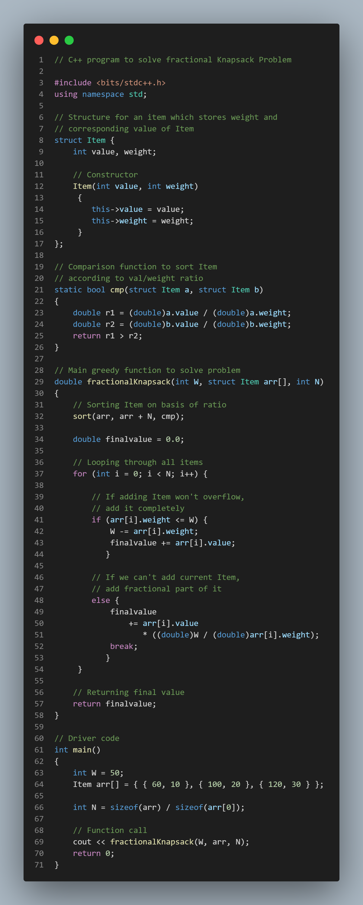

Knapsack Problem
The knapsack problem is a well-known optimization problem in computer science. It is a combinatorial problem that deals with selecting a subset of items from a larger set to maximize a certain objective function while satisfying a constraint. In this blog, we will explore the knapsack problem in detail and understand how to solve it using various algorithms.
For example, consider the following scenario:
Capacity = 10
Items = [{weight: 2, value: 6}, {weight: 2, value: 10}, {weight: 3, value: 12}]
To maximize the value of the items we select while ensuring that the total weight of the selected items does not exceed the capacity of the knapsack, we can use the following combinations: The problem statement is quite simple. Given a set of items, each with a weight and a value, and a knapsack of a certain capacity, we need to select a subset of items to maximize the value of the items we select while ensuring that the total weight of the selected items does not exceed the capacity of the knapsack.
Items 1 and 2: total weight = 4, total value = 16
Items 1 and 3: total weight = 5, total value = 18
Items 2 and 3: total weight = 5, total value = 22
In this case, selecting Items 2 and 3 would give us the maximum value of 22 while keeping the total weight under the capacity of 10.
Brute Force
The brute force approach to solve this problem is to try all possible combinations of items and find the one with the maximum value while keeping the total weight under the capacity of the knapsack. This approach has exponential time complexity and is not feasible for large inputs.
CP Problem:
Coin Change
Solution :
Source Code

Watch the video for understande more-